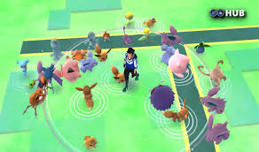

A year ago today, July 6, Niantic unleashed Pokémon Go, an unexpectedly fitness-aspirational scavenger hunt whose dazzling uptake no one saw coming. In hindsight, we should have guessed better. Pokémon is the third-bestselling games franchise in the world after Tetris and Mario, and that's restricting our count to the handheld turn-based roleplaying games at the franchise core.
Pull back and the brand's grasp seems boundless. In 2017, it boasts card games, collectible miniatures, an ongoing TV show with in the vicinity of 1,000 episodes (The Simpsons, which started half a decade sooner, boasts just over 600), 20 theatrically released films, comic books, lord knows how many clamshell Pokéballs, Pikachu plushies and other critter-snatching toys, warehouses of clothing (yes, I've surrendered and bought my children Pokémon underwear), soundtracks, a gazillion guidebooks and a live action film in the offing. It is the highest-grossing entertainment franchise in the world, full stop, ahead of Star Wars, Harry Potter and James Bond.
I was staying at a river cabin when Pokémon Go touched down without ceremony last summer. My cellphone signal was spotty, my data coverage intermittent and sluggish. It took several attempts to finally grab Niantic's augmented reality curio, and first impressions weren't strong. The interface was bland and perplexing: a lanky, spike-haired adolescent appeared to moonwalk over chartreuse flatness divided by a geometrically primitive ribbon of blue (the app's crude semblance of the Mississippi). Unearthing Pokémon after the tutorial's giveaways seemed haphazard. The avatar only moved when you did. Triangulation felt like a crapshoot. And what sort of Pokémon game, to say nothing of games in general, made perambulation mandatory?
But then my almost 4-year-old snatched the phone away and began stalking the premises. Within minutes he'd grasped that the real action lay beyond our little cabin, at which point he dragged me out the door and into a landscape transformed both by prompts from the app and the power of our imaginations.
As I wrote then:
It's turned out to be a strangely amusing mid-afternoon lark, weaving between cottonwoods and cattails, a park activity gym and a ranger station. At one point we almost veer into the weeds where poison ivy lurks. At another, my son wants to climb the steps to the deck off the back of the ranger station "Because please daddy please, there's a Pokémon up there!" Yes, Pokémon Go's exalted reach extends even to Nowhereville, Flyover Country. As soon as my son figured out there were water-based Psyducks and Poliwags and Krabbys lurking around a nearby river, Pokémon Go became an obsession.
If synthesis — of the visible world with an implicit, all but tangible fantasy one — is Pokémon Go's sly inducement, locomotion remains its most conspicuous boon. The game led players to take 144 billion more steps than they might have otherwise during its launch month, claimed one study. Yes, claims about its psychological and social benefits are anecdotal, and who knows what the gameplay's cognitive benefits add up to, but its Nintendo-Wii-like principles of complementary caloric consumption are both self-evident and hard to argue with.
A year later, Pokémon Go is one of a handful of games I keep on my phone, deploying it strategically when we're delayed somewhere, my children racing across physical spaces and down rabbit holes of the mind. It's not the first thing I reach for (that would be my Nintendo Switch). But it's also not the last, thanks to children who have yet to tire of its sweeping collection mandate or simplistic Pokeball-lobbing gestures.
You'd be overreaching to claim Pokémon Go was the moment augmented reality arrived. Accretive, semantically nebulous technologies like "augmented reality" never do in a linear sense. Augmented reality is an aggregative concept, a gathering tidal force already inseparable from our daily lives by way of apps like GPS navigation and selfie tools. Transformational technologies tend to creep up on us, dimly glimpsed as we gaze ahead, and only seen with clarity in the rearview mirror.
But it would be likewise shortsighted to suggest a game that to date boasts 750 million downloads (it placed third on Apple's most downloaded apps of 2016 list, after Snapchat and Messenger) won't be remembered as an important standard-bearer for AR, whose meteoric popularity did much to incline minds toward the possibilities (as well as the potential pitfalls) of overlaying our reality with countless, illimitable other
Lurking beneath the kaleidoscopic bustle of Super Mario Odyssey, Nintendo's tentpole 3D Mario for its Switch game system, due October 27, is something counterintuitively pacific. The game in motion is vibrant and frenetic, angular and elastic, a potpourri of gameplay ideas whizzing and bopping like something unleashed from a crazed chemistry experiment.
As the sixth system in the Nintendo 3DS and 2DS family of consoles, the New Nintendo 2DS XL is a solid offering for tech enthusiasts, collectors and children alike. With a design that’s pleasing to the eye and an exterior upper screen that’s satisfying to touch, the 2DS XL is only a budget device by the materials it uses rather than the hardware it contains.
A year ago today, July 6, Niantic unleashed Pokémon Go, an unexpectedly fitness-aspirational scavenger hunt whose dazzling uptake no one saw coming. In hindsight, we should have guessed better. Pokémon is the third-bestselling games franchise in the world after Tetris and Mario, and that's restricting our count to the handheld turn-based roleplaying games at the franchise core.
The breadth of content in The Legend of Zelda: Breath of the Wild is astounding. But with the arrival of the Master Trials DLC, a 100+ hour game can easily turn into much more. Between the challenging Trial of the Sword to the variety of masks on offer, the DLC is quite the treasure trove for the die-hard Zelda fan.